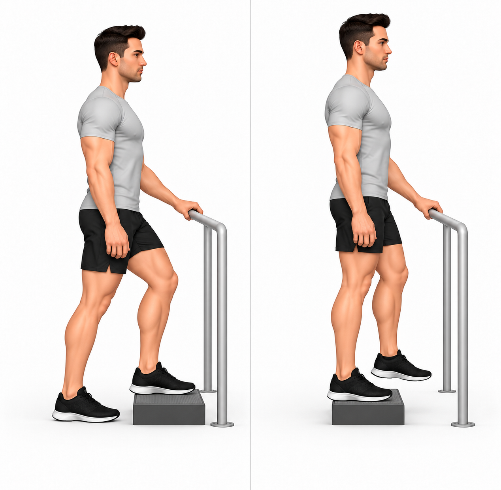
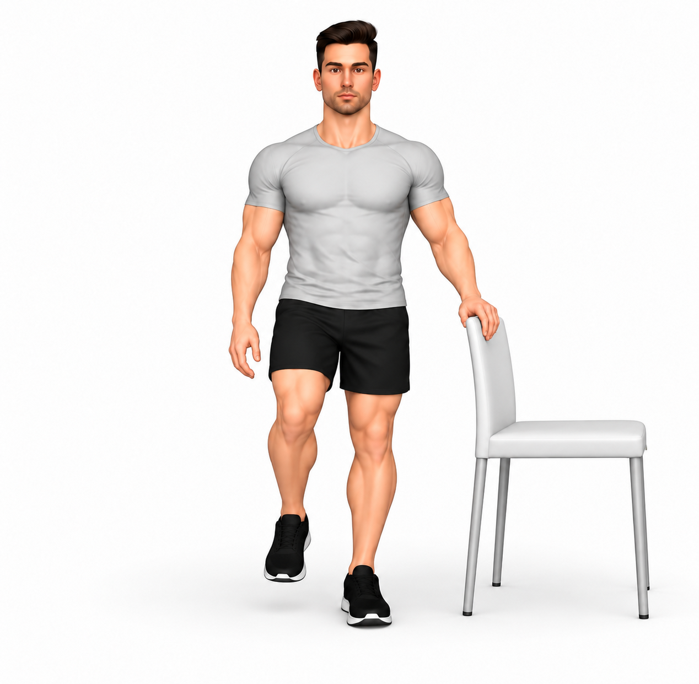

Progressão pela resposta clínica, sem semanas fixas.
Recomendações desta fase
O seu plano
Escolha com a equipa 3–4 opções, sem obrigação de fazer as seis. Substitua variantes semelhantes em vez de acrescentar carga em todas. O apoio unipodal é uma opção de treino, não um exame obrigatório.
Sono e posições
Enquanto houver dor, evite apoiar diretamente a anca dolorosa. Experimente dormir de costas ou sobre o lado mais confortável, com almofada entre as coxas e os joelhos, mantendo a perna de cima apoiada.
Frequência e esforço
Comece com 2–3 sessões de força por semana, em dias alternados. Use resistência que permita terminar com mais 2–3 repetições possíveis e sem perder controlo. Os apoios podem ser mais curtos e assistidos.
Como progredir
Aumente uma variável de cada vez: repetições, resistência, amplitude ou dificuldade. Ajuste o degrau e mantenha apoio estável se necessário. Nos passos laterais, não cruze as pernas.
Atividade cardiovascular
Aumente a caminhada aos poucos, conforme resposta. Na bicicleta, ajuste posição e esforço ao conforto; não suba o selim automaticamente. Na natação, escolha o estilo tolerado, sem impor acessórios ou proibições universais.
Resposta ao exercício
Faça os movimentos com desconforto ligeiro e tolerável. Como referência inicial, procure não ultrapassar 3/10, salvo indicação individual. Reduza ou interrompa se a dor aumentar, alterar a marcha ou a técnica. A dor deve aproximar-se do habitual após a sessão, sem piorar claramente o sono ou a manhã seguinte; se continuar agravada no dia seguinte, reduza a dose e contacte a equipa.
Quando pedir ajuda
Procure avaliação urgente se não conseguir apoiar a perna após queda, surgir dor súbita intensa, febre com anca quente ou inchada, ou fraqueza/dormência novas. Peça reavaliação se a dor piorar de forma persistente, surgir dor profunda na virilha, ou não houver evolução apesar do plano ajustado.

Abdução da anca com elástico — tendinopatia glútea
Sugestão inicial: 2 × 10 repetições
Repouso: 60 s
Como fazer e adaptar
Posição inicial
- De pé com apoio estável disponível, elástico leve nos tornozelos e pés paralelos à largura da bacia.
Execução
- Afaste lateralmente a perna a exercitar na amplitude prescrita, sem inclinar o tronco.
- Regresse devagar até à largura inicial; não deixe a perna cruzar a linha do corpo.
Cuidados
- A imagem demonstra a variante sem apoio; use apoio da mão se necessário.
- Aumente a resistência só mantendo controlo da bacia e boa tolerância.
- Faça apenas a dose e a amplitude prescritas. Pare perante dor aguda ou perda de controlo.
Ponto de partida ajustável: 2 séries de 10 repetições, com 60 segundos de repouso. Dose no lado selecionado pelo profissional; ajustar ao exercício de ambos os lados se indicado. Confirmar carga, amplitude, apoio e frequência no plano individual. Reduzir se houver agravamento do sono ou da manhã seguinte. Não fazer automaticamente todas as opções da fase.
Ponte glútea bilateral — carga inicial
Sugestão inicial: 2 × 10 repetições
Repouso: 60 s
Como fazer e adaptar
Posição inicial
- De costas num tapete, joelhos fletidos, pés apoiados à largura da bacia e braços ao lado do corpo.
Execução
- Empurre o chão com os dois pés e eleve a bacia apenas até à altura tolerada.
- Regresse lentamente, sem arquear excessivamente a região lombar.
Cuidados
- Distribua o esforço pelos dois pés e não deixe os joelhos cair para dentro.
- Faça apenas a dose e a amplitude prescritas. Pare perante dor aguda ou perda de controlo.
Ponto de partida ajustável: 2 séries de 10 repetições, com 60 segundos de repouso. Confirmar carga, amplitude, apoio e frequência no plano individual. Reduzir se houver agravamento do sono ou da manhã seguinte. Não fazer automaticamente todas as opções da fase.
Sentar e levantar de cadeira alta — controlo da anca
Sugestão inicial: 2 × 10 repetições
Repouso: 60 s
Como fazer e adaptar
Posição inicial
- Cadeira firme encostada à parede, com altura que permita levantar sem esforço excessivo. Pés apoiados à largura da bacia.
Execução
- Incline ligeiramente o tronco para a frente e levante-se sem impulso.
- Volte a sentar-se devagar, mantendo os joelhos na direção dos pés.
Cuidados
- Use apoio dos braços se necessário; reduza-o apenas quando conseguir.
- Ajuste altura e amplitude ao conforto.
- Faça apenas a dose e a amplitude prescritas. Pare perante dor aguda ou perda de controlo.
Ponto de partida ajustável: 2 séries de 10 repetições, com 60 segundos de repouso. Confirmar carga, amplitude, apoio e frequência no plano individual. Reduzir se houver agravamento do sono ou da manhã seguinte. Não fazer automaticamente todas as opções da fase.

Subida de degrau baixo com apoio — controlo da anca
Sugestão inicial: 2 × 8 repetições
Repouso: 60 s
Como fazer e adaptar
Posição inicial
- Diante de um degrau baixo, firme e antiderrapante, com corrimão ao lado. Pé da perna a exercitar totalmente apoiado no degrau.
Execução
- Suba com controlo, sem impulso excessivo da perna de trás.
- Desça devagar e repita na altura e amplitude prescritas.
Cuidados
- Mantenha o joelho orientado com o pé e a bacia controlada.
- Use o corrimão. Não existe uma altura obrigatória; não use bancos instáveis.
- Faça apenas a dose e a amplitude prescritas. Pare perante dor aguda ou perda de controlo.
Ponto de partida ajustável: 2 séries de 8 repetições, com 60 segundos de repouso. Dose no lado selecionado pelo profissional; ajustar ao exercício de ambos os lados se indicado. Confirmar carga, amplitude, apoio e frequência no plano individual. Reduzir se houver agravamento do sono ou da manhã seguinte. Não fazer automaticamente todas as opções da fase.

Apoio numa perna com apoio da mão — controlo da bacia
Sugestão inicial: 3 × 15 segundos
Repouso: 30 s
Como fazer e adaptar
Posição inicial
- De pé ao lado de uma cadeira firme, em chão plano e com olhos abertos. Uma mão apoiada no encosto.
Execução
- Transfira o peso para a perna a exercitar e eleve ligeiramente o outro pé.
- Mantenha a bacia nivelada pelo tempo prescrito. Volte aos dois apoios e descanse.
Cuidados
- Ajuste o apoio da mão e o tempo à tolerância. Não deixe a bacia cair.
- Não progrida automaticamente para olhos fechados ou superfície instável.
- Faça apenas a dose e a amplitude prescritas. Pare perante dor aguda ou perda de controlo.
Ponto de partida ajustável: 3 exposições de 15 segundos, com 30 segundos de repouso. Dose no lado selecionado pelo profissional; ajustar ao exercício de ambos os lados se indicado. Confirmar carga, amplitude, apoio e frequência no plano individual. Reduzir se houver agravamento do sono ou da manhã seguinte. Não fazer automaticamente todas as opções da fase.

Passos laterais com elástico — controlo da anca
Sugestão inicial: 2 × 6 repetições
Repouso: 60 s
Como fazer e adaptar
Posição inicial
- De pé com elástico leve nos tornozelos, pés paralelos e ligeira flexão confortável dos joelhos. Apoio próximo se necessário.
Execução
- Dê um passo lateral curto, mantendo a bacia controlada.
- Aproxime a outra perna apenas até à largura inicial; não cruze nem junte completamente os pés.
- Faça os passos prescritos e regresse na direção oposta.
Cuidados
- Use pouca tensão inicial. Não rode os pés ou balance o tronco para puxar o elástico.
- Não precisa de manter um agachamento profundo.
- Faça apenas a dose e a amplitude prescritas. Pare perante dor aguda ou perda de controlo.
Ponto de partida ajustável: 2 séries de 6 repetições, com 60 segundos de repouso. Cada série corresponde aos passos indicados em cada direção, sem cruzar as pernas. Confirmar carga, amplitude, apoio e frequência no plano individual. Reduzir se houver agravamento do sono ou da manhã seguinte. Não fazer automaticamente todas as opções da fase.